건축산업기사 (2016-05-08 기출문제)
1과목: 건축계획
1. 주택에서 주부의 가사노동을 경감시키기 위한 방법으로 옳지 않은 것은?
- 주부의 동선을단축시킬 것
- 가급적 넓은 주거공간으로 계획할 것
- 설비를 좋게 하고 되도록 기계화 할 것
- 능률적인 부엌시설과 가사실을 갖출 것
(정답률: 92%)

2. 숑바르 드 로브의 주거면적기준 중 표준기준은?
- 8m2/인
- 10m2/인
- 14m2/인
- 16m2/인
(정답률: 79%)
3. 상점의 쇼 윈도우 유리면의 반사 방지 방법으로 옳지 않은 것은?
- 곡면유리를 사용한다.
- 유리를 경사지게 설치한다.
- 차양을 설치하여 외부에 그늘을 준다.
- 쇼 윈도우 내부의 조도를 고객이 있는 외부보다 어둡게 한다.
(정답률: 92%)
4. 사무소 건축계획에서 층고를 낮게 잡는 이유와 관계 없는 것은?
- 건축 공사비를 절감하기 위하여
- 체적을 줄여 에너지 절약을 하기 위하여
- 엘리베이터의 왕복시간을 단축하기 위하여
- 높이 제한 내에서 많은 층수를 얻기 위하여
(정답률: 84%)
5. 다음 중 상점 내부의 기본조명에 필요한 조명 기구수의 산정과 가장 거리가 먼 것은?
- 실면적
- 평균조도
- 램프광속
- 쇼케이스 수
(정답률: 77%)
6. 사무소 건축의 코어 계획 시 고려사항으로 옳지 않은 것은?
- 코어 내의 공간의 위치를 명확히 한다.
- 코어 내 각 공간이 각 층마다 공통의 위치에 있도록 한다.
- 코어 내의 공간과 임대사무실 사이의 동선을 간단하게 한다.
- 엘리베이터는 효율적 이용을 위해 2개소 이상으로 분산 배치한다.
(정답률: 90%)
7. 공장 건축의 레이아웃(lay out)에 관한 설명으로 옳지 않은 것은?
- 고정식 레이아웃은 제품의 대량생산에 적합한 방식이다.
- 레이아웃은 장래 공장 규모의 변화에 대응한 융통성이 있어야 한다.
- 기능이 유사한 기계를 집합시키는 방식은 표준화가 어려운 공장에 채용한다.
- 제품의 흐름에 따라 기계를 배치하는 방식을 연속작업식 레이아웃이라 한다.
(정답률: 69%)
8. 음악실이 주당 28시간 사용되고 있는 중학교에서 1주 간의 평균 수업시간은? (단, 음악실의 이용률은 80%임)
- 22시간
- 23시간
- 34시간
- 35시간
(정답률: 70%)
9. 사무소 건축의 실단위 계획 중 개방식 배치에 관한 설명으로 옳은 것은?
- 소음이 들리고 독립성이 떨어진다.
- 고정된 칸막이벽 공사가 요구된다.
- 개실시스템에 비해 공사비가 고가이다.
- 일반적으로 자연채광만으로 조명을 처리한다.
(정답률: 82%)
10. 다음 중 건축계획단계에서 그리드 플래닝(Grid planning)의 적용이 가장 효과적인 건축물은?
- 교회
- 사무소
- 미술관
- 단독주택
(정답률: 72%)
11. 아파트의 평면 형식 중 중복도형에 관한 설명으로 옳은 것은?
- 대지 이용률이 높다.
- 복도의 면적이 최소화된다.
- 자연 채광과 통풍이 우수하다.
- 각 세대의 프라이버시가 매우 좋다.
(정답률: 72%)
12. 공장건축의 형식 중 분관식(Pavillion type)에 관한 설명으로 옳지 않은 것은?
- 통풍, 채광에 불리하다.
- 배수, 물홈통 설치가 용이하다.
- 공장의 신설, 확장이 비교적 용이하다.
- 건물마다 건축 형식, 구조를 각기 다르게 할 수 있다.
(정답률: 79%)
13. 상점의 정면(facade)구성에 요구되는 AIDMA법칙의 내용에 속하지 않는 것은?
- 예술(Art)
- 욕구(Desire)
- 흥미(Interest)
- 기억(Memory)
(정답률: 86%)
14. 학교 운영방식에 관한 설명으로 옳지 않은 것은?
- 종합교실형은 초등학교 고학년에 가장 적합한 형식이다.
- 플라톤형은 각 학급을 2분단으로 나누어 운영하는 방식이다.
- 교과교실형은 모든 교실이 틍정교과 때문에 만들어지며 일반교실은 없다.
- 달톤형은 학급과 학생의 구분을 없애고, 학생 들의 능력에 맞게 교과를 선택하여 운영하는 방식이다.
(정답률: 82%)
15. 엘리베이터 계획에서 다음과 같이 정의되는 용어는?
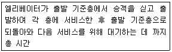
- 수송시간
- 주행시간
- 승차시간
- 일주시간
(정답률: 78%)
16. 상점의 점두(店頭)형식 중 만입형에 관한 설명으로 옳지 않은 것은?
- 혼잡한 도로에서 유리하다.
- 점내에 자연채광이 용이하다.
- 숍 프론트의 진열부 면적이 크다.
- 고객이 점두에 머무르기가 용이하다.
(정답률: 61%)
17. 공동주택의 남북 간 인동간격 결정 시 고려사항과 가장 거리가 먼 것은?
- 태양고도
- 일조시간
- 대지의 지형
- 건물의 동서길이
(정답률: 85%)
18. 부엌의 작업대 중 작업삼각형(working triangle)의 꼭지점에 속하지 않는 것은?
- 싱크
- 레인지
- 냉장고
- 배선대
(정답률: 83%)
19. 주택의 평면계획에서 고려하여야 할 사항으로 옳지 않은 것은?
- 구성 본위가 유사한 것은 서로 격리시킨다.
- 시간적 요소가 같은 것은 서로 접근시킨다.
- 상호간 요소가 서로 다른 것은 서로 격리시킨다.
- 공간에서의 행위가 유사한 것은 서로 접근시킨다.
(정답률: 83%)
20. 공동주택의 단면형식 중 메조넷형에 관한 설명으로 옳지 않은 것은?
- 거주성, 특히 프라이버시가 높다.
- 통로면적은 물론 유효면적도 감소한다.
- 복도가 없는 층이 있어 평면계획이 유동적이다.
- 엘리베이터의 정지 층수가 적어 운영면에서 경제적이다.
(정답률: 76%)
2과목: 건축시공
21. 지반조사의 토질시험과 관계가 없는 시험 항목은?
- 체가름시험
- 들밀도 시험
- 투수시험
- 소성한계시험
(정답률: 59%)
22. 프리팩트 콘크리트시공에서 주입관 배치와 압송에 관한 설명으로 옳지 않은 것은?
- 주입관의 간격은 굵은 골재의 치수, 주입 모르타르의 배합, 유동성 및 주입속도에 따라 정한다.
- 연직주입관의 수평 간격은 2m 정도를 표준으로 한다.
- 수평주입관의 수평 간격은 4m 정도, 연직 간격은 2m 정도를 표준으로 한다.
- 주입은 하부로부터 상부로 순차적으로 한다.
(정답률: 67%)
23. 다음 건설기계 중 철골세우기 작업 시 철골부재 양중에 적합한 것은?
- 타워크레인(tower crane)
- 와이어 클립퍼(wire cliper)
- 드래그 라인(drag line)
- 콘베이어(conveyer)
(정답률: 84%)
24. 시멘트 벽돌공사에 관한 주의사항으로 옳지 않은 것은?
- 벽돌은 품질, 등급별로 정리하여 사용하는 순서별로 쌓아둔다.
- 수직하중을 벽면 전체로 분산시키기 위해 통줄눈으로 쌓는다.
- 모르타르는 정확한 배합으로 시멘트와 모래만을 잘 섞고, 사용 시 물을 부어 반죽하여 쓴다.
- 벽돌쌓기 시 잔토막 또는 부스러기 벽돌을 쓰지 않는다.
(정답률: 72%)
25. 건설공사 현장관리에 대한 설명으로 옳지 않은 것은?
- 목재는 건조시키기 위하여 개별로 세워둔다,.
- 현장사무소는 본 건물 규모에 따라 적절한 규모로 설치한다.
- 철근은 그 직경 및 길이별로 분류해둔다.
- 기와는 눕혀서 쌓아둔다.
(정답률: 83%)
26. 철근콘크리트조 건물의 지하실 방수공사에서 시공의 난이, 공사비의 고저를 생각하지 않고 시공하는 경우 가장 바람직한 방법은?
- 아스팔트 바깥 방수법으로 시공한다.
- 콘크리트에 AE제를 넣는다.
- 방수 모르타르를 바른다.
- 콘크리트에 방수제를 넣는다.
(정답률: 72%)
27. 가설건물 중 시멘트 창고의 구조에 대한 설명으로 옳지 않은 것은?
- 바닥구조는 마루널깔기가 보통이며 가능하면 그 위에 루핑을 깐다
- 주위에는 배수구를 설치하여 물빠짐을 좋게 한다.
- 통풍이 잘 되도록 가능한 한 개구부의 크기를 크게 한다.
- 시멘트의 높이 쌓기는 13포대를 한도로 한다.
(정답률: 86%)
28. 소규모 철골공사에 많이 사용되며 자재를 양중하기에 편리한 것으로 폴 데릭(pole derrick)이라고도 불리는 것은?
- 가이데릭
- 삼각데릭
- 진폴
- 타워크레인
(정답률: 74%)
29. 기준점(Bench mark)에 대한 설명으로 옳지 않은 것은?
- 기준점은 공사에 지장이 없는 곳에 설정한다.
- 기준점은 2개소 이상 설치한다.
- 기준점은 G.L에서 0.5~1.0m 높이에 설치한다.
- 기준점은 이동이 가능한 시설물에 설치한다.
(정답률: 87%)
30. 토사를 파내는 형식으로 좁은 곳의 수직굴착 등에 적합한 건설기계는?
- 모터그레이더(motor grader)
- 드래그라인(drag line)
- 앵글도저(angle dozer)
- 클램쉘(clam shell)
(정답률: 80%)
31. 목재 이음의 종류가 아닌 것은?
- 주먹장이음
- 연귀이음
- 반턱이음
- 빗이음
(정답률: 65%)
32. 콘크리트 이어붓기에 대한 설명 중 옳지 않은 것은?
- 기둥 및 벽에서는 기초 및 바닥의 상단에서 수평으로 한다.
- 캔틸레버보 및 바닥판은 중앙부에서 수직으로 한다.
- 보나 슬래브는 전단력이 가장 작은 스팬의 중앙부에서 수직으로 한다.
- 아치(arch)의 이음은 아치축에 직각으로 한다.
(정답률: 49%)
33. 높이 2.5m, 길이 100m의 벽을 기본벽돌 1.5B 두께로 쌓을 때 벽돌 소요량은? (단, 기본 벽돌의 규격은 190×90×57이며, 할증률을 포함)
- 47508매
- 48750매
- 50213매
- 57680매
(정답률: 47%)
34. 네트워크(network)공정표에서 작업의 개시, 종료 또는 작업과 작업 간의 연결점을 나타내는 것은?
- Activity
- Dummy
- Event
- Critical path
(정답률: 70%)
35. 고층건축물 공사의 반복작업에서 각 작업조의 생산성을 기울기로 하는 직선으로 도시화하는 공정관리기법은?
- 바챠트(Bar chart)
- LOB(Line of Balance)
- 매트릭스 공정표(Matrix schedule)
- CPM(Critical pate method)
(정답률: 80%)
36. 지하(地下)방수나 아스팔트 펠트 삼투(滲透)용으로 주로 사용되는 재료는?
- 스트레이트 아스팔트
- 아스팔트 컴파운드
- 아스팔트 프라이머
- 블로운 아스팔트
(정답률: 59%)
37. 포틀랜드 시멘트를 구성하는 주 원료는?
- 석회암과 점토
- 화강암과 점토
- 응회암과 점토
- 안산암과 점토
(정답률: 77%)
38. 타일 붙임공법과 가장 거리가 먼 것은?
- 압착공법
- 떠붙임 공법
- 접착제 붙임 공법
- 앵커긴결 공법
(정답률: 75%)
39. 도료 사용시 주목적이 방청에 해당되지 않는 것은?
- 광명단 도료
- 징크로메이트 도료
- 바니시
- 알루미늄 도료
(정답률: 72%)
40. 건축공사에서 사용하는 일반적인 석회를 무엇이라 하는가?
- 소석회
- 백시멘트
- 생석회
- 여물
(정답률: 74%)
3과목: 건축구조
41. 철근 콘크리트 보의 취성파괴를 방지하기 위한 최소철근비(ρmin)는?
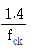
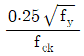
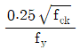
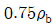
(정답률: 59%)
42. 그림과 같은 양단 내민보에서 C점의 휨모멘트 MC=0의 값을 가지려면 C점에 작용시킬 하중 P의 크기는?
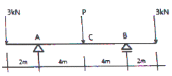
- 3kN
- 4kN
- 6kN
- 8kN
(정답률: 46%)
43. 그림과 같은 보의 A단에 모멘트 M = 80kNㆍm 가 작용할 때 B단에 발생하는 고정단 모멘트의 크기는?
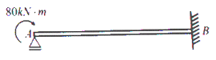
- 20kNㆍm
- 40kNㆍm
- 60kNㆍm
- 80kNㆍm
(정답률: 53%)
44. 강재의 용접에 대한 설명으로 옳지 않은 것은?
- 탄소함유량은 용접성에 큰 영향을 미친다.
- 용접부에는 용접에 의한 잔류응력이 존재한다.
- 강재를 예열하여 용접하면 용접성이 좋아진다.
- 동일두께의 강재에서는 강도가 높을수록 용접성이 좋아진다.
(정답률: 62%)
45. 나선철근 규정에 따라 나선철근으로 보강된 철근콘크리트 기둥에서 강도감소계수는 얼마인가?
- 0.85
- 0.75
- 0.70
- 0.65
(정답률: 47%)
46. 철근콘크리트 슬래브의 수축ㆍ온도 철근에 대한 설명 중 옳은 것은?
- 슬래브에서 휨철근이 1방향으로만 배치되는 경우 휨철근에 직각 방향의 온도 철근은 필요없다.
- 수축ㆍ온도 철근비는 콘크리트 유효 높이에 대하여 계산한다.
- 수축ㆍ온도 철근은 콘크리트 설계기준강도 fck를 발휘할 수 있도록 정착되어야 한다.
- 수축ㆍ온도 철근으로 배치되는 이형 철근의 철근비는 어느 경우에도 0.0014이상이어야 한다.
(정답률: 47%)
47. 철근콘크리트구조물의 처짐에 관한 설명으로 옳지 않은 것은?
- 휨부재의 크리프와 건조수축에 위한 추가 장기처짐 산정 시 5년 이상의 지속하중에 대한 시간경과계수는 2.0이다.
- 과도한 처짐에 의해 손상될 우려가 없는 비구조요소를 지지한 지붕이나 바닥구조의 처짐한계는 l/240이다.
- 내부의 보가 없는 2방향 슬래브 중 철근의 항복강도가 400MPa이고 지판이 없는 경우 내부슬래브의 최소두께는 ln/33이다.
- 처짐을 계산하지 않는 경우 양단연속된 리브가 있는 1방향 슬래브의 최소두께는 l/24이다.
(정답률: 51%)
48. 다음과 같은 단면을 가지는 철근콘크리트 보의 균형철근비(ρb)는 얼마인가?(단, 콘크리트의 압축강도는 30MPa, 철근의 항복강도는 450Mpa, 철근의 탄성계수는 2.0×105MPa이며 인장철근의 단면적은 2,000mm2이다.)
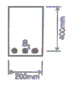
- 0.027
- 0.037
- 0.047
- 0.⑤7
(정답률: 46%)
49. 그림과 같은 트러스에서 v 부재의 부재력은?
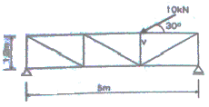
- 5kN
- 10kN
- 15kN
- 20kN
(정답률: 49%)
50. 그림과 같은 내민보의 개략적인 휨모멘트도(B.M.D)로 옳은 것은?
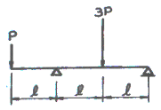
(정답률: 48%)
51. 지지조건과 횡구속에 따른 좌굴하중에서 그림A의 장주가 15kN 하중에 견딜 수 있다면 그림 B의 장주가 견딜 수 있는 하중은?
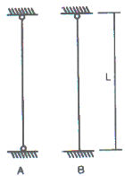
- 20.6kN
- 30.6kN
- 35.6kN
- 45.6kN
(정답률: 54%)
52. 강도설계법에서 옥외의 공기나 흙에 직접 접하지 않는 슬래브의 최소피복두께는 얼마인가?(단, KBC2009기준, 현장치기콘크리트이며 D35이하의 철근사용)
- 20mm
- 40mm
- 50mm
- 60mm
(정답률: 36%)
53. 건축물의 각 구조형식에 대한 설명 중 옳지 않은 것은?
- 라멘구조는 기둥, 보 및 바닥으로 구성되며, 철근콘크리트구조 또는 철골구조 등이 해당된다.
- 벽식구조는 내력벽으로 하여 바닥과 일체로 구성되기 때문에 공동주택 등에 많이 이용되며, 철근콘크리트구조에 의한다.
- 플랫 슬래브 구조는 보 없이 수직하중을 철근콘크리트 기둥 및 지판이 부담하는 구조이다.
- 트러스 구조는 가늘고 긴 부재를 사각형의 형태로 짜 맞추어 구성되며, 부재에는 휨모멘트와 축력이 작용하는 구조이다.
(정답률: 63%)
54. 강도설계법에서 철근의 겹칩이음 중에 A급 이음을 가장 옳게 설명한 것은?
- 소요철근량의 1배 이상 배근된 경우 또는 겹침이음된 철근량이 전체철근량이 50% 이내
- 소요철근량의 1배 이상 배근된 경우이고 겹침이음된 철근량이 전체철근량이 50% 이내
- 소요철근량의 2배 이상 배근된 경우 또는 겹침이음된 철근량이 전체철근량이 50% 이내
- 소요철근량의 2배 이상 배근된 경우이고 겹침이음된 철근량이 전체철근량이 50% 이내
(정답률: 46%)
55. 철근콘크리트 구조의 특징에 대한 설명으로 옳지 않은 것은?
- 보의 압축응력은 콘크리트가 부담하고, 인장응력은 철근이 부담한다.
- 콘크리트는 철근이 녹스는 것을 방지한다.
- 자제중량은 크지만 시공과 강도계산이 간단하다.
- 철근과 콘크리트는 선팽창계수가 거의 같다.
(정답률: 63%)
56. 단면적 10,000mm
- 1.0mm
- 1.5mm
- 2.0mm
- 2.5mm
(정답률: 40%)
57. 그림과 같은 양단 고정보에서 A지점의 반력 모멘트 MA는? (단, 이 보의 휨강도 EI는 일정하다.)
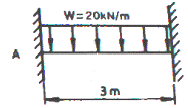
- 10kNㆍm
- 15kNㆍm
- 20kNㆍm
- 25kNㆍm
(정답률: 44%)
58. 그림과 같은 동일 단면적을 가진 A,B,C 보의 휨 강도비(A:B:D)를 구하면?
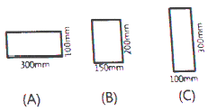
- 1:2:3
- 1:2:4
- 1:3:4
- 1:3:5
(정답률: 65%)
59. 그림과 같이 모살용접하는 경우 용접부의 유효목두께를 구하면?
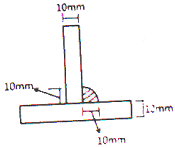
- 5mm
- 7mm
- 9mm
- 10mm
(정답률: 55%)
60. 말뚝기초의 경우 기초판 상연에서부터 하부철근까지의 최소깊이로 옳은 것은?(단, KBC2009기준)
- 200mm
- 250mm
- 300mm
- 350mm
(정답률: 40%)
4과목: 건축설비
61. 변전실 면적 결정에 영향을 주는 요소에 속하지 않는 것은?
- 수전전압
- 변압기 용량
- 발전기 용량
- 설치 기기와 큐비클의 종류
(정답률: 48%)
62. 스프링클러헤드의 디플렉터(Defilector)에 관한 설명으로 옳은 것은?
- 방수구에 물을 보내어 압력을 가하게 하는 부분이다.
- 방수구에 수압이 가해지게 하여 하중이 걸리게 하는 부분이다.
- 방수구에서 유출되는 물을 확산시키는 작용하는 부분이다.
- 방수구에서 유출되는 물에 혼합된 공기를 분류 하는 부분이다.
(정답률: 73%)
63. 각개통기관에 관한 설명으로 옳은 것은?
- 2개 이상의 트랩을 보호하기 위해 설치한다.
- 통기와 배수의 역할을 함께 하는 통기관이다.
- 트랩마다 설치되므로 가장 안정도가 높은 방식이다.
- 배수수직관 상부에서 관경을 축소하지 않고 연장하여 대기 중에 개방한다.
(정답률: 75%)
64. 바닥복사난방에 관한 설명으로 옳지 않은 것은?
- 실내바닥면의 이용도가 높다.
- 하자 발견이 어렵고 보수가 어렵다.
- 천장이 높은 방의 난방은 불가능하다.
- 방이 개방상태에서도 난방 효과가 있다.
(정답률: 76%)
65. 다음의 습공기 선도상의 변화과정을 옳게 설명한 것은?
- 가열가습과정
- 가열감습과정
- 냉각가습과정
- 냉각감습과정
(정답률: 69%)
66. 압축식 냉동기의 주요 구성요소에 속하지 않는 것은?
- 흡수기
- 응축기
- 증발기
- 팽창밸브
(정답률: 59%)
67. 다음의 보일러 출력표시 방법 중 가장 작은 값으로 나타나는 것은?
- 정격출력
- 상용출력
- 정미출력
- 과부하출력
(정답률: 80%)
68. 다음의 냉방부하의 종류 중 잠열부하가 발생하는 것은?
- 덕트로부터의 취득열량
- 송풍기에 의한 취득열량
- 외기의 도입으로 인한 취득열량
- 일사에 의한 유리로부터의 취득열량
(정답률: 65%)
69. 액화석유가스(LPG) 가스용기(봄베)의 보관온도는?
- 최대 10℃ 이하
- 최대 20℃ 이하
- 최대 30℃ 이하
- 최대 40℃ 이하
(정답률: 68%)
70. 형광램프에 관한 설명으로 옳지 않은 것은?
- 백열전구보다 효율이 높다.
- 백열전구보다 휘도가 낮다.
- 백열전구보다 수명이 길다.
- 백열전구보다 전원 전압의 변동에 대한 광속 변동이 크다.
(정답률: 67%)
71. 3상 Y결선되고 선간전압이 380V인 3상교류의 상전압은?
- 120V
- 220V
- 380V
- 660V
(정답률: 58%)
72. 다음의 공기조화방식 중 반송동력이 가장 적게 소요되는 방식은?
- 팬코일유닛방식
- 정풍량 단일덕트방식
- 변풍량 단일덕트방식
- 덕트병용 팬코일유닛방식
(정답률: 54%)
73. 어떤 건물의 급탕량이 3m3/h일 때 급탕부하는? (단, 물의 비열은 4.2kJ/kgㆍK, 급탕온도는 75℃, 급수온도는 5℃이다.)
- 195kW
- 215kW
- 245kW
- 295kW
(정답률: 56%)
74. 실내에 설치할 방열기기의 선정 시 고려할 사항 과 가장 거리가 먼 것은?
- 응축수량이 많을 것
- 사용하는 열매종류에 적합할 것
- 실내온도 분포가 균일하게 될 것
- 설치장소에 적합한 디자인과 견고성을 가질 것
(정답률: 57%)
75. 배수 배관에서 일반적으로 청소구(clean out)의 설치가 요구되는 곳에 속하지 않는 것은?
- 배수수평주관의 기점
- 배수수직관의 최상부
- 배수수직관의 최하부 또는 그 부근
- 수평관에서 45˚를 넘는 각도에서 방향을 전환하는 개소
(정답률: 70%)
76. 수관보일러에 관한 설명으로 옳지 않은 것은?
- 지역난방에 사용이 가능하다.
- 보일러 상부와 하부에 드럼이 있다.
- 노통 연관식보다 수처리가 용이하다.
- 고압증기를 다량 사용하는 곳에 적합하다.
(정답률: 49%)
77. 수도직결급수방식에서 기구의 소요압력이 70kPa이고 수전 높이가 10m 일 때 수도 본관에는 최소 얼마의 압력이 있어야 급수가 가능한가? (단, 배관 중 마찰손실을 40kPa이다.)
- 70kPa
- 120kPa
- 170kPa
- 210kPa
(정답률: 48%)
78. 전양정 24m, 양수량 13.8m3/h, 효율이 60%인 펌프의 축동력은?
- 0.5kW
- 1.0kW
- 1.5kW
- 3.0kW
(정답률: 59%)
79. 에스컬레이터에 관한 설명으로 옳지 않은 것은?
- 수송량에 비해 점유면적이 크다.
- 엘리베이터에 비해 수송능력이 크다.
- 대기시간이 없고 연속적인 수송설비이다.
- 연속 운전되므로 전원설비에 부담이 적다.
(정답률: 68%)
80. 집을 오랫동안 비워 두었더니 트랩의 봉수가 파괴되었다. 다음 중 그 원인으로 가능성이 가장 큰 것은?
- 증발현상
- 공동현상
- 자기사이펀작용
- 유도사이펀작용
(정답률: 74%)
5과목: 건축관계법규
81. 건축법령상 다가구주택이 갖추어야 할 요건에 속하지 않는 것은?
- 19세대 이하가 거주할 수 있을 것
- 독립된 주거의 형태를 갖추지 아니할 것
- 주택으로 쓰는 층수(지하층은 제외)가 3개 층 이하일 것
- 1개 동의 주택으로 쓰이는 바닥면적의 합계가 660m2이하일 것
(정답률: 74%)
82. 건축법령상 건축(건축행위)에 속하지 않는 것은?
- 개축
- 재축
- 이전
- 대수선
(정답률: 75%)
83. 다음 중 대지 및 건축물관련 건축기준의 허용 오차가 옳지 않은 것은?
- 건축물 높이 : 3% 이내
- 바닥판 두께 : 3% 이내
- 건축선의 후퇴거리 : 3% 이내
- 인접건축물과의 거리 : 3% 이내
(정답률: 65%)
84. 공동주택의 거실에 설치하는 반자의 높이는 최소 얼마 이상으로 하여야 하는가?
- 2.1m
- 2.4m
- 2.7m
- 4.0m
(정답률: 63%)
85. 건축물의 거실(피난층의 거실 제외)에 국토교통 부령으로 정하는 기준에 따라 배연설비를 하여야 하는 대상 건축물의 용도에 속하지 않는 것은?(단, 6층 이상인 건축물의 경우)
- 공동주택
- 판매시설
- 숙박시설
- 위락시설
(정답률: 53%)
86. 피난안전구역의 설치에 관한 기준 내용으로 옳지 않은 것은?
- 피난안전구역의 높이는 2.1m 이상일 것
- 피난안전구역의 내부마감재료는 불연재료로 설치할 것
- 비상용 승강기는 피난안전구역에서 승하차 할 수 있는 구조로 설치할 것
- 건축물의 내부에서 피난안전구역으로 통하는 계단은 피난계단의 구조로 설치할 것
(정답률: 74%)
87. 층수가 15층이며, 각 층의 거실면적이 1000m2인 업무시설에 설치하여야 하는 승용승강기의 최소 대수는? (단, 8인승 승강기의 경우)
- 4대
- 5대
- 6대
- 7대
(정답률: 60%)
88. 건축물의 출입구에 설치하는 회전문에 관한 기준 내용으로 옳지 않은 것은?
- 계단이나 에스컬레이터로부터 2m 이상의 거리를 둘 것
- 출입에 지장이 없도록 일정한 방향으로 회전하는 구조로 할 것
- 회전문의 회전속도를 분당회전수가 10회를 넘지 아니하도록 할 것
- 자동회전문은 충격이 가하여지거나 사용자가 위험한 위치에 있는 경우에는 전자감지장치 등을 사용하여 정지하는 구조로 할 것
(정답률: 77%)
89. 부설주차장의 인근설치 규정에서 시설물의 부지 인근의 범위(해당부지의 경계선으로부터 부설 주차장의 경계선까지의 거리)기준으로 옳은 것은?
- 직선거리 : 100m 이내, 도보거리 : 500m 이내
- 직선거리 : 100m 이내, 도보거리 : 600m 이내
- 직선거리 : 300m 이내, 도보거리 : 500m 이내
- 직선거리 : 300m 이내, 도보거리 : 600m 이내
(정답률: 69%)
90. 주거지역의 세분 중 공동주택 중심의 양호한 주거환경을 보호하기 위하여 필요한 지역은?
- 제1종전용주거지역
- 제2종전용주거지역
- 제1종일반주거지역
- 제2종일반주거지역
(정답률: 63%)
91. 건축물의 설비기준 등에 관한 규칙에 따라 피뢰설비를 설치하여야 하는 대상 건축물의 높이 기준은?
- 10m 이상
- 20m 이상
- 30m 이상
- 40m 이상
(정답률: 76%)
92. 건축물의 면적 산정방법에 관한 기준 내용으로 옳지 않은 것은?
- 대지면적은 대지의 수평투영면적으로 한다.
- 연면적은 하나의 건축물 각 층의 거실면적의 합계로 한다.
- 건축면적은 건축물의 외벽의 중심선으로 둘러 싸인 부분의 수평투영면적으로 한다.
- 바닥면적은 건축물의 각 층 또는 그 일부로서 벽, 기둥, 그 밖에 이와 비슷한 구획의 중심선 으로 둘러싸인 부분의 수평투영면적으로 한다.
(정답률: 64%)
93. 다음은 대지의 조경에 관한 기준 내용이다. ( )안에 알맞은 것은?
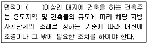
- 100m2
- 150m2
- 180m2
- 200m2
(정답률: 71%)
94. 주차장 주차단위획의 크기 기준으로 옳은 것은?(단, 일반형으로 평행주차형식 외의 경우)(관련 규정 개정전 문제로 여기서는 기존 정답인 4번을 누르면 정답 처리됩니다. 자세한 내용은 해설을 참고하세요.)
- 너비 1.7m 이상, 길이 4.5m 이상
- 너비 2.0m 이상, 길이 3.6m 이상
- 너비 2.0m 이상, 길이 6.0m 이상
- 너비 2.3m 이상, 길이 5.0m 이상
(정답률: 62%)
95. 다음은 창문 등의 차면시설에 관한 기준 내용이다. ( )안에 알맞은 것은?
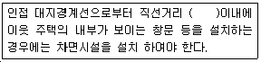
- 1m
- 1.5m
- 2m
- 3m
(정답률: 66%)
96. 부설주차장 설치대상 시설물의 위락시설인 경우 부설주차장 설치기준으로 옳은 것은?
- 시설면적 100m2당 1대
- 시설면적 150m2당 1대
- 시설면적 200m2당 1대
- 시설면적 300m2당 1대
(정답률: 62%)
97. 건축물에 대한 구조의 안전을 확인하는 경우 건축구조기술사의 협력을 받아야 하는 대상 건축물에 속하지 않는 것은?(단, 지진구역 안의 건축물이 아닌 경우)
- 특수구조 건축물
- 다중이용 건축물
- 준다중이용 건축물
- 층수가 5층인 건축물
(정답률: 66%)
98. 다음은 주차전용건축물의 주차면적비율에 관한 기준 내용이다. ( )안에 포함되지 않는 건축물의 용도는?
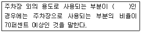
- 공동주택
- 의료시설
- 종교시설
- 업무시설
(정답률: 58%)
99. 제1종일반주거지역 안에서 건축할 수 없는 건축물은?
- 아파트
- 단독주택
- 제1종 근린생활시설
- 교육연구시설 중 고등학교
(정답률: 77%)
100. 건축법령상 준초고층 건축물의 정의로 옳은 것은?
- 고층건축물 중 초고층 건축물이 아닌것
- 층수가 30층 이상이거나 높이가 120m 이상인 건축물
- 층수가 40층 이상이거나 높이가 160m 이상인 건축물
- 층수가 50층 이상이거나 높이가 200m 이상인 건축물
(정답률: 70%)